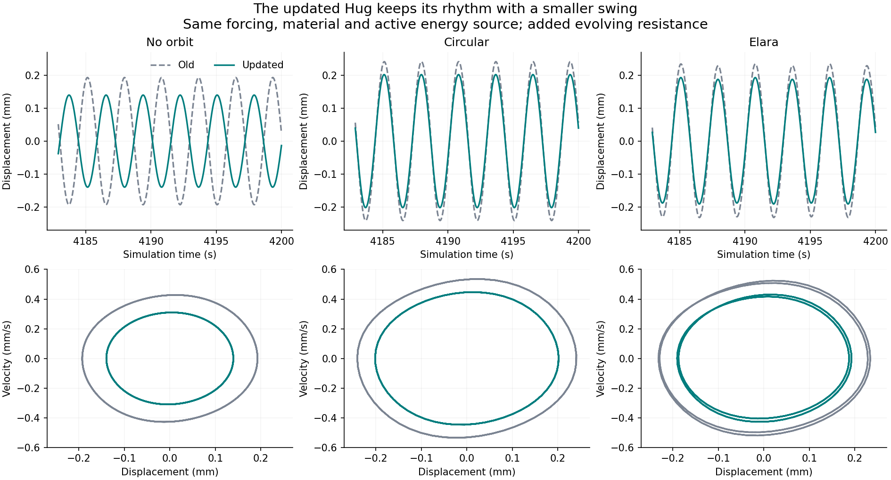
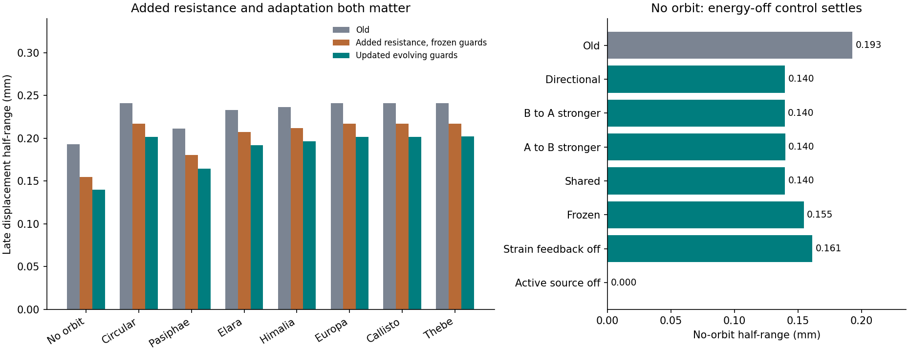
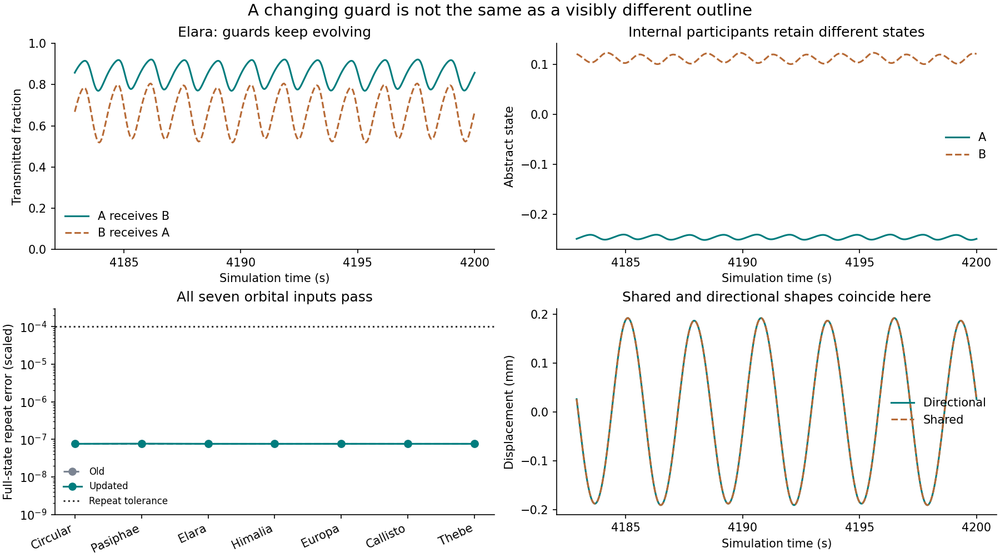

Earlier Hug study / Updated comparison
The rhythm remains.
The swing becomes smaller.
The updated evolving guards preserve the synthetic Hug's stable autonomous rhythm and its orbital repetition in all seven forced conditions. The no-orbit displacement half-range falls by 27.6%. All declared numerical checks pass.
Play old and updated Hug Equations and full methods Numerical results
What was tested: the old clay oscillator plus two abstract participant states and continuously evolving directional guards. The optional resistance loop is represented by a damper. This is an explicit reduced coupling choice, not a full fluid, contact, rupture or measured-clay model.
Without an orbit, then with circular and eccentric inputs

Without an orbit, the old period is 2.839324 s; the primary updated period is 2.836413 s. Both have locally attracting cycles verified by shooting and Floquet tests. Under orbital forcing, the mean motion period is about 2.85 s, with the entire state repeating after the 5.7 s orbit. Nonzero eccentricity can make consecutive within-orbit motions unequal.
| Input | Old half-range (mm) | Updated half-range (mm) | Change | Outcome in both |
|---|---|---|---|---|
| No orbit | 0.192928 | 0.139735 | -27.6% | Stable cycle |
| Circular | 0.240895 | 0.201772 | -16.2% | Orbital repeat |
| Pasiphae | 0.211387 | 0.164457 | -22.2% | Orbital repeat |
| Elara | 0.232928 | 0.191748 | -17.7% | Orbital repeat |
| Himalia | 0.236559 | 0.196443 | -17.0% | Orbital repeat |
| Europa | 0.240973 | 0.201852 | -16.2% | Orbital repeat |
| Callisto | 0.240959 | 0.201838 | -16.2% | Orbital repeat |
| Thebe | 0.241013 | 0.201884 | -16.2% | Orbital repeat |
Half-ranges are measured over the last 456 simulation seconds from start 1; both starts pass the full-state agreement tests. Moon names select eccentricity. All orbital periods and force RMS values are held fixed; these are not actual lunar loads.
What caused the change?

Adding fixed resistance already reduces the no-orbit swing from 0.192928 to 0.154556 mm. Allowing the guard to evolve reduces it by a further 9.6% relative to that frozen control. Turning off the active energy source removes the autonomous rhythm; orbital forcing can still produce motion. The energy-off switch removes both feedback gain and nonlinear saturation, so forced amplitude need not always be smaller than in the active model.
The hidden states matter

With equal weights, the shared and directional rules give the same mechanical motion here: the displacement, participant difference and guard sum form the same closed subsystem from matched starting values. The directional guards themselves differ. Thus these results do not show that directional asymmetry caused the smaller swing. The unequal-weight comparisons produce small additional changes, retained in the results and player.
Accuracy and limits
128 trajectories at two accuracy settings; 52 independent physical-unit Radau segments; six autonomous cycle stability calculations. Maximum saved full-state difference: 1.47e-07, below 0.0002. Maximum energy residual: 2.11e-06, below 0.00001. Maximum independent-solver difference: 1.79e-08, below 0.00002. Both accuracy settings produce identical classifications.
This experiment does not repeat the earlier stiffness-switch loss/recovery protocol, so it does not establish a new circular-versus-Elara recovery-time ordering. It tests one damper strength and one guard time mapping, two starts, and a finite horizon. The parameter choices and material remain synthetic. The outline animation preserves closure through its drawing map.
Frozen comparison · Pre-run source freeze · Equation tests · Diagnostic tests · Saved animation samples